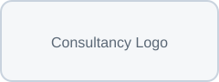

Typical response: within 1 working day (subject to fieldwork).
You’ll deal directly with an experienced ecologist who will work with you to understand your project needs and can plan delivery efficiently.
Quick facts on how EchoSight supports ecological consultancies with dependable delivery.
Typical response: within 1 working day (subject to fieldwork).
You’ll deal directly with an experienced ecologist who will work with you to understand your project needs and can plan delivery efficiently.
Remote data and reporting support available UK-wide.
Accredited agent supporting compliant survey delivery and clear evidence packages suitable for planning and, where applicable, licence submissions. Experience includes bats, GCN and reptile survey support, and EcOW support where appropriately scoped.
£1m Professional Indemnity and £2m Public Liability in place, supported by proportionate QA procedures informed by BS 42020 and BS 42021 principles.
Choose the specialist input you need and EchoSight integrates seamlessly with your team.
Accredited agent operating under a Natural England licence, delivering surveys and clear, evidence-ready outputs, with mitigation support provided where appropriately scoped and authorised.
Explore survey supportProcessing, analysis, and quality control for acoustic, video, and GIS datasets to keep reporting on schedule.
See data workflowsFeasibility, survey calendars, and stakeholder-ready plans that de-risk ecological constraints early.
Plan with confidenceWork is delivered as an accredited agent and subcontract ecologist, with licensed activities undertaken only where specifically authorised under the relevant named licence holder.
EchoSight pairs licensed surveyor support with data and planning services so you have dependable support from scoping through final submission.
Logos shown with permission from the consultancies EchoSight partners with.

Share your scope and EchoSight will respond within one working day with availability, pricing, and next steps.